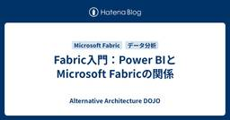

Alternative Architecture DOJO
https://aadojo.alterbooth.com/
オルターブースのクラウドネイティブ特化型ブログです。
フィード

Fabric入門：Power BIとMicrosoft Fabricの関係
Alternative Architecture DOJO
Microsoft Fabricを学び始めると、「Power BIはFabricの一部なのか、それとも別のサービスなのか？」と疑問に感じることがあります。本記事では、Power BIの歴史やMicrosoft Fabricの位置付けを整理しながら、両者の関係が分かりづらい理由について解説します。
4日前

AWS Summit Japan 2026に参加してきました - DAY1-
Alternative Architecture DOJO
こんにちは、先日とある所に飾られた笹に七夕の短冊を娘が飾ったというので何の願い事をしたのか聞いたら「パパがテストで100点取れますようにと書いた！」と言っていて、先日受験したDP-600に合格したのは娘のお願いのおかげだったのかなと思った木村です。 なお、辛うじて合格はしたものの100点(満点)には程遠い出来でした・・・ 2026年6月25日～26日に、千葉の幕張メッセで開催されたAWS Summit Japan 2026に参加してきました。 aws.amazon.com DAY1(6/25)に参加したセッションについて、私の感想を交えてお伝えしたいと思います。 基調講演 基調講演で登壇される…
15日前
Copilot StudioでSalesforce Headless 360のMCPサーバーを利用する
Alternative Architecture DOJO
Microsoft Copilot StudioからSalesforce Headless 360のMCPサーバー接続手順を実践的に解説。外部クライアント登録、PKCE無効化、JWT発行、OAuth設定、MCP登録、エージェント作成とテストまでを丁寧に紹介。
17日前
Fabric入門：Fabric Capacityとは何か
Alternative Architecture DOJO
Fabric Free・Fabric Trial・Fabric Capacityの関係を整理しながら、Fabric Capacityの役割や課金の仕組みについて整理しました。
20日前
GitHub EnterpriseやGitHub Copilot導入時にAzureサブスクリプションが必要な理由をわかりやすく解説
Alternative Architecture DOJO
GitHub EnterpriseやGitHub Copilotの導入・運用において、なぜAzureサブスクリプションとの連携が求められるのかを初心者向けに解説した記事です。主な理由は「支払い（請求）の統合とコスト管理の一元化」にあります。複雑になりがちな開発ツールの費用をAzure上でまとめて管理・監視できるメリットや、従量課金制による柔軟な運用の仕組みについて分かりやすく説明します。
1ヶ月前
Fabric入門：Power BIのレポートを使って分析してみる
Alternative Architecture DOJO
Fabricを学びながら整理してきたシリーズの最終回です。今回は、LakehouseのTablesのデータをPower BIレポートで可視化するまでの流れをまとめています。
1ヶ月前
【入社エントリ】オルターブースに入社しました
Alternative Architecture DOJO
はじめに はじめまして！今年度オルターブースに新卒で入社した柳井です。 今回は、オルターブースとの出会いと、入社を決めた理由、そして入社してからの率直な感想をお伝えしたいと思います。少しでも会社のことや、僕自身のことを知っていただけたら嬉しいです。 自己紹介 山口県出身 趣味は登山・ライブ・歩くこと 知らない技術もとりあえず向き合って触ってみる派 学生時代 僕の学生時代は、とにかく行動に移すことを心がけていました。入学当初はタイピングもままならない状態からのスタートでしたが、1年生の頃にデータエンジニアカタパルト（現在：ネクストエンジニアカタパルト）という福岡市が主催のイベントに参加し、チーム…
1ヶ月前
AIが実装する時代に、人間は何を決めるのか ～ AI Engineering Summit Tokyo 2026 Day1レポート ～
Alternative Architecture DOJO
こんにちは、先日親戚の家に遊びに行ったときに、そこの飼い犬と遊んでいる娘が「でれーん、でれーんして！」と言っていて何事かと思ったら「伏せ」と言いたかったようで、キョトンとした犬の表情が印象的だった木村です。 さて、先日開催された AI Engineering Summit Tokyo 2026 に参加してきましたので、その内容をまとめてみたいと思います。 AI Engineering Summit Tokyo 2026 とは 今回参加したのは、ファインディ株式会社が主催する AI Engineering Summit Tokyo 2026 です。 AIエージェントを「使う」「創る」「推進する」…
1ヶ月前
AI Engineering Summit Tokyo 2026 で感じた AI 活用のトレンド
Alternative Architecture DOJO
はじめに こんにちは！オリビアです。 先日、AI Engineering Summit Tokyo 2026 に現地参加してきました。 大規模イベントで、常時 4 トラックでセッションがあり、とっても盛り上がっていましたね～ セッション間の 20 分間はブースを回りつつ次の部屋へ行かなければならないので一日中大忙しでした！ 個別のセッションの詳細なレポはほかの方にお任せするとして、本記事では私がセッションを聞いて感じた AI 活用のトレンドについて記載しようと思います。 私は今年 4 月に入社し、やや長めの育休明けということもあり、AI を業務で活用するのはほぼ初めての浦島太郎状態でした。 そ…
1ヶ月前
Fabric入門：Lakehouseにデータを取り込んでTablesを作ってみる
Alternative Architecture DOJO
Fabricを学びながら整理している第4回です。今回はCSVファイルをLakehouseに取り込み、FilesからTablesへとデータが変わっていく流れを、実際に触りながら確認してみました。
1ヶ月前
Azure CLIでAzure App Service (Linux)の起動時のログを確認する
Alternative Architecture DOJO
Azure App Service（Linux）の起動時ログをAzure CLIで確認する方法を解説。`az webapp log startup` コマンドでログ一覧取得から個別ログの詳細確認までを紹介し、成功・失敗時の挙動やトラブルシュートのポイントも整理。ポータル不要で効率的にデバッグできます。
1ヶ月前
Salesforceの商談からfreee請求書を発行する流れ｜Salesforce × freee 連携
Alternative Architecture DOJO
こんにちは、オルターブースの中島です。 もう6月に入り一年の半分が過ぎ去ろうとしています...とても早く感じますね。 今年も農業系エンジニア（自称）の中島は、6月に田植えを予定しております🌾今年も頑張ってお米を作っていこうと思いますので、いつかお米作りやお味噌づくりのブログも書きたいなと思っています。 ブログのアジェンダはこちら 弊社の商談管理・請求システム構成 Salesforce と freee の連携 Salesforce から freee 請求書を作成する流れ freee for Salesforce の連携内容と設定 freee 請求書・見積書の項目設定 freee 会計のデータ同期…
1ヶ月前
Fabric入門：LakehouseとWarehouseの違いをシンプルに整理する
Alternative Architecture DOJO
Fabricを学びながら整理している第3回。今回はLakehouseとWarehouseについて、「何が違うのか分からない」という状態から抜けるために、役割の違いをシンプルに整理してみました。
2ヶ月前
利用量ベースの課金体系となったGitHub Copilotの予算を設定する
Alternative Architecture DOJO
GitHub Copilot は6月1日から利用量ベース課金へ移行し、AI Credits による柔軟な予算管理が可能になります。管理者は月次予算やアラートを細かく設定でき、組織全体で安心して効率的に Copilot を活用できます。
2ヶ月前
ghas-bootcamp リポジトリで学ぶ GitHub Advanced Security ~Dependabot 編~
Alternative Architecture DOJO
こんにちは、エンジニアのみっつーです！ とても今更ですが、ghas-bootcamp という GitHub 公式のハンズオンリポジトリを使った GitHub Advanced Security 機能のおさらいをやっていきたいと思います。 github.com このリポジトリのハンズオン、個人的にはこれから GitHub Advanced Security をやっていきたい方や資格試験を受けに行く方には必ず一度通すことを勧めています。 とはいえ ghas-bootcamp リポジトリは既にアーカイブされているため（恐らく GitHub の UI も変わり、今後追従しないということの明示かと思われ…
2ヶ月前
Fabric入門：Tablesの中で何が起きているのか（Delta Lake入門）
Alternative Architecture DOJO
Microsoft Fabricを学びながら整理している第2回。今回はTablesに焦点を当てて、Delta Lakeの仕組みを図と実例で理解してみました
2ヶ月前
Azure Cosmos DB Shell で Azure Cosmos DB を簡単に操作する
Alternative Architecture DOJO
こんにちは！オルターブースの清島です。 2026年5月に、 Azure Cosmos DB Shell というオープンソースのツールがパブリックプレビューとしてリリースされました。 devblogs.microsoft.com 今回はこの Azure Cosmos DB Shell のクイックスタートや機能についてご紹介します。 （本記事は2026/5/26時点のパブリックプレビュー版の情報をもとに作成しています。） Azure Cosmos DB Shell の概要 Azure Cosmos DB のデータベースに対する操作が可能なコマンドラインインターフェース Bash ライクな使用感でコ…
2ヶ月前
"Conductor"でAIコーディングアシスタントのワークフローを管理する
Alternative Architecture DOJO
Microsoft Conductorの基本を、インストール手順からYAMLによるマルチエージェントワークフロー定義、CLI実行方法まで実例付きで解説。おみくじアプリの計画・実装・テスト自動化を通じて、GitHub CopilotやClaudeを活用したAIエージェント管理の魅力を紹介します。
2ヶ月前
Fabric入門：OneLakeとLakehouseで理解する「データの置き場と流れ」
Alternative Architecture DOJO
Microsoft Fabricの基本を理解するために、OneLake・Workspace・Lakehouseの関係と、データの保存から分析までの流れをやさしく整理しました。
2ヶ月前
【Visual Studio】GitHub Copilot を使ったコミットメッセージ生成がカスタムインストラクションに対応しました！
Alternative Architecture DOJO
こんにちは！エンジニアのはっしーです！ 暑くなってきましたね。家庭菜園で育てているじゃがいもやピーマンは葉っぱが青々としげり、ミニトマトは実がつき始めました。 収穫が楽しみです。 さて今回は、Visual Studio 2026 18.6.0 で、GitHub Copilot のコミットメッセージ生成ルールを Visual Studio の設定ではなく .github/copilot-instructions.md で管理する方式に変わったので、その内容を紹介します。 チームやリポジトリごとに異なるルールがある場合でも、IDE 側の設定を切り替えずに運用しやすくなりました。ぜひ参考にしてみてく…
2ヶ月前
【入社エントリ】オルターブースに入社しました
Alternative Architecture DOJO
ご挨拶 はじめまして、オリビアです。 2026 年 4 月にオルターブースへ入社しました。 マイクロソフト製品が好きで、Microsoft MVP を Azure と Security のカテゴリで受賞しています。 これまでは SIer として、情シス支援を中心に Azure や Microsoft 365、Security まわりに関わってきました。 この記事では、これまでの経験と、オルターブースとのご縁、そして「なぜ入社したのか」を書いてみようと思います。 これまでの経験 私は最初から IT 一筋だったわけではありません。 大学に入ってから趣味でメイドのアルバイトを始めたのですが、思った以…
2ヶ月前
GitHub CLIで自作のエージェントスキルを発行する
Alternative Architecture DOJO
GitHub CLI v2.90.0 で追加された gh skill コマンドを使うことで、GitHub Copilot向けのエージェントスキルの検索・発行・インストールが簡単に行えるようになった。本記事では、著者が自作スキルを実際に gh skill publish で公開し、タグ作成・リリース生成・Immutable releases の設定など、発行に必要なプロセスを詳しく紹介。さらに、公開したスキルを gh skill install でインストールし、対象エージェント（GitHub Copilot）やスコープ（Global）を選択する流れも解説。従来のリポジトリクローン方式よりも、CLIによるスキル管理が大幅に効率化される点がポイント。
3ヶ月前
2026年7月実施：Microsoft 365 法人向け製品の価格改定について
Alternative Architecture DOJO
2026年7月に実施されるMicrosoft 365（法人向け）価格改定について解説します。
3ヶ月前
GitHub Copilot CLIでMicrosoft Foundryのモデルを利用する
Alternative Architecture DOJO
GitHub Copilot CLIでMicrosoft FoundryのBYOKモデル（例：GPT-5.4）を使う方法を実例付きで解説します。環境変数（PowerShell/Bash）設定、v1.0.32の前提、データプライバシー、Foundry Localの現状や注意点も網羅。
3ヶ月前
オンプレミスエンジニアが AI 時代のハイブリッドなインフラエンジニアを目指すならまずはこのあたりから考え始めてみてはどうか、という話 - Microsoft AI Tour Tokyo
Alternative Architecture DOJO
初めまして。1月に入社しました中山です。 私はこれまでオンプレミスを中心にインフラを触ってきました。 Azure を学び始めてまだ日が浅く AIやクラウドを活用したい気持ちはある しかし、何をどうしたら良いかはっきり見えない そんな状態で試行錯誤している最中です。 そのような立場で Microsoft AI Tour Tokyo 2026 に参加し、複数のセッションを聴講する中で 「すべてを理解できなくてもよいが、ここだけは押さえておくと今後が楽になる」 と感じた共通点がありました。 この記事で伝えたいこと オンプレミスエンジニアがAIの話題に触れると 難しそう 自分の専門外ではないか まだ自…
3ヶ月前
Microsoft AI Tour Tokyo 2026 に参加できなかったエンジニアへ - 開催後に投稿されたMicrosoft公式情報を探ってみた
Alternative Architecture DOJO
こんにちは！オルターブースの木村龍太郎です。2026/3/24 に東京で開催された Microsoft AI Tour 2026。私は都合により参加できませんでしたが、後日、Microsoft が資料を公開していることを知り、情報を探ってみました。この記事では、それらの情報を紹介するとともに、内容を少しピックアップしてみます。 基調講演 公式によるまとめ記事 AI Tour 26 Resource Center（GitHub リポジトリ） 1. AI ビジネスソリューション 2. クラウド & AI プラットフォーム 3. セキュリティ 気になったセッション まとめ 基調講演 www.yout…
3ヶ月前
Scrum Fest Fukuoka 2026に参加しました
Alternative Architecture DOJO
はじめに こんにちは！最近春が近づいてきており暖かくなってきましたね。今回は先日オンライン参加したScrum Fest Fukuoka 2026のレポートを書きます🌸 Scrum Fest Fukuoka 2026とは スクラムフェス福岡は、今年で第4回を迎えるアジャイルコミュニティの祭典です。 プロダクト開発の技術やプロセスだけでなく、人・チーム・組織にも価値を置き、エンジニアやデザイナー、QA、SM、POなどロールを問わず、関心のあるすべての人が楽しめるイベントです。 全国から参加者が集まる年に一度のイベントで、初参加やイベント未経験者も歓迎しています。 www.scrumfestfuku…
4ヶ月前
Microsoft AI Tour Tokyo 2026 に参加してきました！
Alternative Architecture DOJO
2026年3月24日、東京で開催された Microsoft AI Tour Tokyo 2026 に参加してきました。 aitour.microsoft.com Microsoft AI Tour は、Microsoft が世界40都市以上で開催している AIイベントです。 東京ビッグサイトで行われた今回のイベントは、基調講演・ブレイクアウトセッション・ワークショップ・ライトニングトークに加え、展示会場「Connection Hub」では、多くの展示やライブデモが行われていました。 そして今回のテーマは 「Frontier Transformation」。マイクロソフトが掲げる「フロンティア組…
4ヶ月前
Microsoft AI Tour Tokyo のワークショップを参考に Copilot Studio を使ってみた
Alternative Architecture DOJO
こんにちは、エンジニアのはっしーです。 今回は、Microsoft AI Tour Tokyo に参加したことをきっかけに、実際に Copilot Studio でそのようなエージェントを作ってみたので、その体験をまとめます。 目次 1. AI Tour で感じたこと 2. ワークショップを参考に Copilot Studio を使ってみた ワークショップの内容 今回試した内容 2-1. エージェントの基本設定 2-2. ナレッジの追加 2-3. エージェントフローの追加 2-4. ツールの追加 2-5. トピックの追加 2-6. 指示の作成 2-7. エージェントのテスト 試してみた感想 3…
4ヶ月前
Microsoft AI Tour Tokyo 2026のブースで紹介した"Azure App Platform"を整理する
Alternative Architecture DOJO
Microsoft AI Tour Tokyo 2026 のブースで多かった「Azure App Platform って何ですか？」という疑問に答える記事です。単一のサービス名ではなく、AI アプリやエージェントを支える Azure の実行基盤群として、主要サービスの役割と活用の入口をわかりやすく整理しています。
4ヶ月前